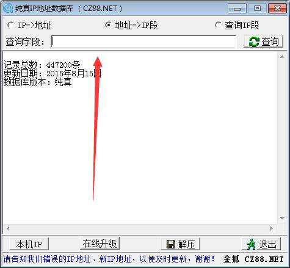
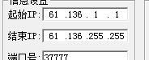
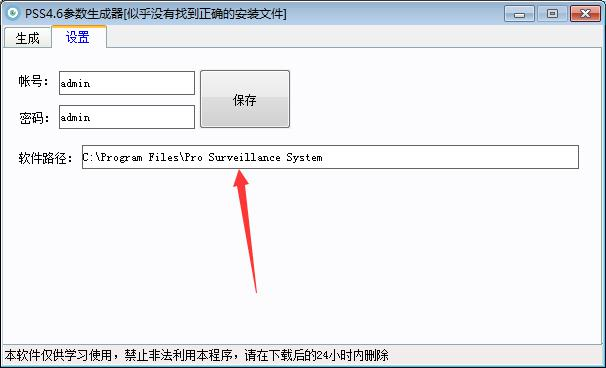
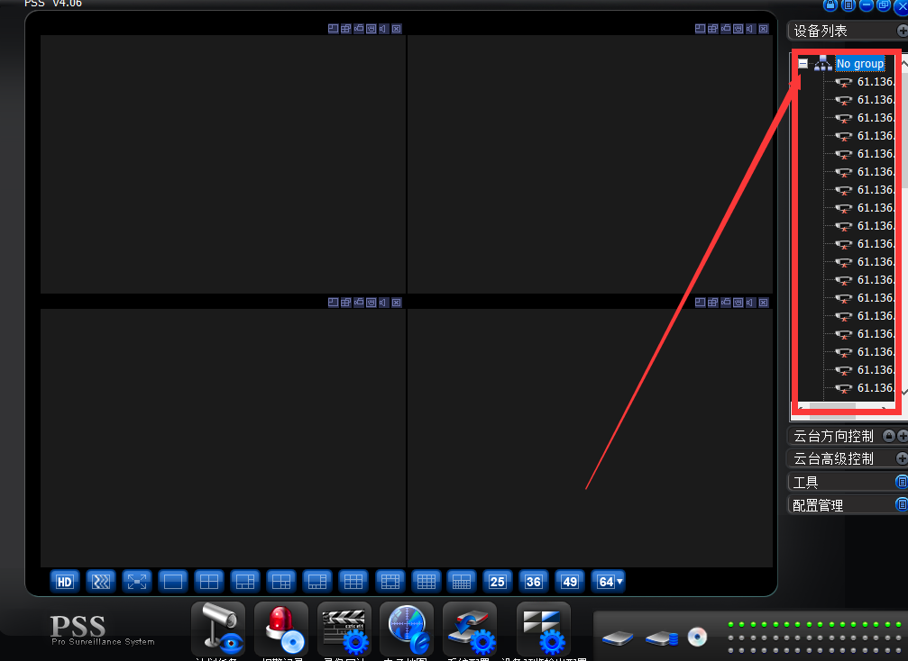
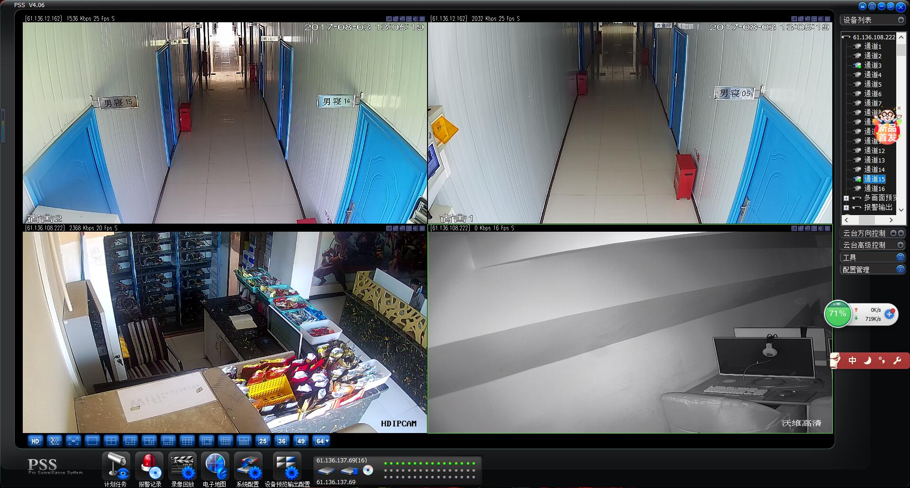

继网站被黑事件之后，一直铭记在心。不能像弱鸡一样，任由摆布，相信每一个程序员都有一颗hacker心。攻防无绝对，技术无黑白。
第一次入侵监控，也不知道算不算入侵，但是内心非常激动 !

工具
本地IP端 端口扫描工具 PPS软件 PPS参数生成器
本地IP端：监控摄像头也有地址，和网址一样
端口扫描工具：监控摄像头地址有一个对应的端口，比如你家的窗户
PPS软件 ：一款监控摄像头连接软件
PPS参数生成器：连接摄像头时，需要一种格式进行批量连接，输入IP此工具自动生成
流程
1、处理IP
打开ip查询工具,输入地址即可，比如你的城市，然后我们复制IP，粘贴到未处理，直接把IP段给处理好了，下面开始扫描37777端口

2、扫描端口
开始扫描所有一个IP段的 37777端口
这就属于一个IP段，参考这个IP端，进行扫描。

扫描完成之后，复制到pss生成器里面。

然后进行安装pss软件，这个是你安装pss的目录。上面admin admin 是摄像头的默认账号密码。

打开pss软件，右上角点击就可以看到所有的设备。可以右键选择登录，也可以双击登录

登录成功，这种属于批量登录弱口令的pss，当然你也可以进行爆破！！！
名词解释
弱口令：弱口令就是用户名和密码都是系统默认的,没有改。或者只是一些简单的数字组合.很容易被黑客破解. 加密强度不高的口令。
“弱口令”带来强风险
前段时间央视就曝光，摄像头破解，售卖破解软件，卖家提供的扫描软件启动后，会源源不断地跳出IP地址，这种扫描是通过什么原理来进行的呢？
国家互联网应急中心高级工程师高胜：主要是依靠扫描器，用一些弱口令密码，做大范围的扫描。弱口令就是一些user或者admin。这类摄像头很容易被入侵。 日前，国家互联网应急中心在市场占有率排名前五的智能摄像头品牌中随机挑选了两家，进行了弱口令漏洞分布的全国性监测。结果令人惊讶，仅仅两个品牌的摄像头，就有十几万个存在着弱口令漏洞。
如何安全使用 智能摄像头。
1.关闭网络，进行存储类监控。黑客能够进行攻击，首先是依托于网络木马，给你发一个病毒，然后通过病毒获取你的登录信息，以此为跳板进行你家中的网络系统形成监控。如果没有网络，黑客将无计可施。
2.室内摄像头不用时断电。在回到家中后，请记住将摄像头进行断电，不要因为个人生活的懒散而造成不良的后果追悔莫及。
3.及时进行固件的升级和漏洞的填补。及时更新系统信息和升级固件，为自己家的网络安装防火墙等。
声明：
本教程仅供学习和研究技术使用，禁止用于非法用途，否则后果自负。
参考资料：小陈's Blog《批量入侵本地摄像头》